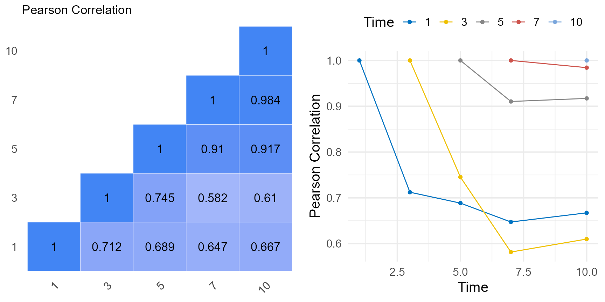

Repeated Measurements
Johan Aparicio
Source:vignettes/repeated_measurements.Rmd
repeated_measurements.RmdThe extract_rcov() function is a practical tool for
extracting the residual variance-covariance matrix from a repeated
measurement ASReml model. This function is particularly useful when
dealing with various covariance structures, including but not limited to
the uniform correlation (corv), power or exponential (expv),
antedependence (ante) and unstructured (US).
Currently, the structures available are:
- Simple correlation model (
corv); homogeneous variance form. - Simple correlation model (
corh); heterogeneous variance form. - General correlation model (
corgh); heterogeneous variance form. - Exponential (or power) model (
expv); homogeneous variance form. - Exponential (or power) model (
exph); heterogeneous variance form. - Autoregressive model of order 1 (
ar1v); homogeneous variance form. - Autoregressive model of order 1 (
ar1h); heterogeneous variance form. - Antedependence variance model of order 1 (
ante). - Unstructured variance model (
us).
Watch the
tutorial: A good guide on fitting repeated measurement models in
ASReml by VSNi. However, it might leave you wondering how to actually
extract the fitted residual variance-covariance matrix. That’s where
extract_rcov() comes into play.
This vignette utilizes the same dataset featured in the video and
incorporates a segment of the code to showcase the functionality of
extract_rcov(). Additionally, we provide insightful figures
that aid in exploring the results.
To run this vignette, ensure you have an ASReml license.
library(ggpubr)
library(agriutilities)
library(tidyr)
library(dplyr)
library(tibble)
library(asreml)
head(grassUV) |> print()
grassUV |>
ggplot(
aes(x = Time, y = y, group = Plant, color = Plant)
) +
geom_point() +
geom_line() +
facet_wrap(~Tmt) +
theme_minimal(base_size = 15)#> Online License checked out Tue Jan 30 10:20:38 2024
#> Tmt Plant Time HeightID y
#> 1 MAV 1 1 y1 21.0
#> 2 MAV 1 3 y3 39.7
#> 3 MAV 1 5 y5 47.0
#> 4 MAV 1 7 y7 53.0
#> 5 MAV 1 10 y10 55.0
#> 6 MAV 2 1 y1 32.0
Exploration
tmp <- grassUV |>
group_by(Time, Plant) |>
summarise(mean = mean(y, na.rm = TRUE)) |>
spread(Time, mean) |>
column_to_rownames("Plant")
a <- covcor_heat(matrix = cor(tmp), legend = "none", size = 4.5) +
ggtitle(label = "Pearson Correlation")
b <- tmp |>
cor(use = "pairwise.complete.obs") |>
as.data.frame() |>
rownames_to_column(var = "Time") |>
gather("Time2", "corr", -1) |>
type.convert(as.is = FALSE) |>
mutate(corr = ifelse(Time < Time2, NA, corr)) |>
mutate(Time2 = as.factor(Time2)) |>
ggplot(
aes(x = Time, y = corr, group = Time2, color = Time2)
) +
geom_point() +
geom_line() +
theme_minimal(base_size = 15) +
color_palette(palette = "jco") +
labs(color = "Time", y = "Pearson Correlation") +
theme(legend.position = "top")
ggarrange(a, b)
Modeling
Let’s fit several models with different variance-covariance structures:
# Identity variance model.
model_0 <- asreml(
fixed = y ~ Time + Tmt + Tmt:Time,
residual = ~ id(Plant):idv(Time),
data = grassUV
)
# Simple correlation model; homogeneous variance form.
model_1 <- asreml(
fixed = y ~ Time + Tmt + Tmt:Time,
residual = ~ id(Plant):corv(Time),
data = grassUV
)
# Exponential (or power) model; homogeneous variance form.
model_2 <- asreml(
fixed = y ~ Time + Tmt + Tmt:Time,
residual = ~ id(Plant):expv(Time),
data = grassUV
)
# Exponential (or power) model; heterogeneous variance form.
model_3 <- asreml(
fixed = y ~ Time + Tmt + Tmt:Time,
residual = ~ id(Plant):exph(Time),
data = grassUV
)
# Antedependence variance model of order 1
model_4 <- asreml(
fixed = y ~ Time + Tmt + Tmt:Time,
residual = ~ id(Plant):ante(Time),
data = grassUV
)
# Autoregressive model of order 1; homogeneous variance form.
model_5 <- asreml(
fixed = y ~ Time + Tmt + Tmt:Time,
residual = ~ id(Plant):ar1v(Time),
data = grassUV
)
# Autoregressive model of order 1; heterogeneous variance form.
model_6 <- asreml(
fixed = y ~ Time + Tmt + Tmt:Time,
residual = ~ id(Plant):ar1h(Time),
data = grassUV
)
# Unstructured variance model.
model_7 <- asreml(
fixed = y ~ Time + Tmt + Tmt:Time,
residual = ~ id(Plant):us(Time),
data = grassUV
)Model Comparison
We can use the Akaike Information Criterion (AIC)(Akaike, 1974) or the Bayesian Information Criterion (BIC)(Stone, 1979) for comparing the fitted models. A lower AIC or BIC value indicates a better fit.
models <- list(
"idv" = model_0,
"corv" = model_1,
"expv" = model_2,
"exph" = model_3,
"ante" = model_4,
"ar1v" = model_5,
"ar1h" = model_6,
"us" = model_7
)
summary_models <- data.frame(
model = names(models),
aic = unlist(lapply(models, \(x) summary(x)$aic)),
bic = unlist(lapply(models, \(x) summary(x)$bic)),
loglik = unlist(lapply(models, \(x) summary(x)$loglik)),
nedf = unlist(lapply(models, \(x) summary(x)$nedf)),
param = unlist(lapply(models, \(x) attr(summary(x)$aic, "param"))),
row.names = NULL
)
summary_models |> print()
summary_models |>
ggplot(
aes(x = reorder(model, -bic), y = bic, group = 1)
) +
geom_point(size = 2) +
geom_text(aes(x = model, y = bic + 5, label = param), size = 5) +
geom_line() +
theme_minimal(base_size = 15) +
labs(x = NULL, y = "BIC")#> model aic bic loglik nedf param
#> 1 idv 420.8836 422.9779 -209.4418 60 1
#> 2 corv 397.7535 401.9422 -196.8768 60 2
#> 3 expv 369.9577 374.1464 -182.9788 60 2
#> 4 exph 354.9984 367.5645 -171.4992 60 6
#> 5 ante 338.7387 357.5878 -160.3694 60 9
#> 6 ar1v 366.1259 370.3146 -181.0630 60 2
#> 7 ar1h 351.1073 363.6734 -169.5536 60 6
#> 8 us 346.0712 377.4863 -158.0356 60 15
In this specific scenario, the antedependence model emerges as the optimal choice, as indicated by the Bayesian Information Criteria (BIC). The 1-factor antedependence structure elegantly models the variance-covariance matrix \(\Sigma^{\omega \times\omega}\) with the following decomposition:
\[ \Sigma ^{-1} = UDU' \] where \(U^{\omega \times\omega}\) is a unit upper triangular matrix and \(D = diag(d_1, ..., d_{\omega})\) is a diagonal matrix.
\[\begin{array}{rcl} U_{ii} & = & 1 \\ U_{ij} & = & u_{ij}, \;\; 1 \le j-i\le order \\ U_{ij} & = & 0, \;\; i>j \end{array}\]and the order in our case is 1.
The extract_rcov() retrieves these matrices for a closer
inspection of the results.
Wald Test
The table below shows the summary of Wald statistics for fixed effects for the models fitted.
| Model | Time | Tmt | Tmt:Time | |||
|---|---|---|---|---|---|---|
| F.value | P.value | F.value | P.value | F.value | P.value | |
| idv | 24.06 | 0 | 30.410 | 0.000 | 2.254 | 0.074 |
| corv | 54.46 | 0 | 9.407 | 0.010 | 5.101 | 0.002 |
| expv | 39.75 | 0 | 6.874 | 0.023 | 6.116 | 0.000 |
| exph | 51.98 | 0 | 0.000 | 0.984 | 4.322 | 0.011 |
| ante | 33.89 | 0 | 4.139 | 0.064 | 3.345 | 0.038 |
| ar1v | 39.24 | 0 | 6.912 | 0.023 | 6.001 | 0.001 |
| ar1h | 51.24 | 0 | 0.007 | 0.937 | 4.325 | 0.010 |
| us | 40.47 | 0 | 1.715 | 0.215 | 3.344 | 0.061 |
Variance Components
At first glance, the table below looks challenging to interpret; however, the function translates the summary output into tangible forms—both the actual variance-covariance matrix and the correlation matrix.
summary(model_4)$varcomp#> component std.error z.ratio bound %ch
#> Plant:Time!R 1.000000000 NA NA F 0.0
#> Plant:Time!Time_1:1 0.026866609 0.011023605 2.437189 U 0.0
#> Plant:Time!Time_3:1 -0.628374025 0.246035667 -2.553996 U 0.0
#> Plant:Time!Time_3:3 0.037282432 0.015467375 2.410392 U 0.0
#> Plant:Time!Time_5:3 -1.491096654 0.586492845 -2.542395 U 0.1
#> Plant:Time!Time_5:5 0.005996185 0.002467878 2.429692 U 0.0
#> Plant:Time!Time_7:5 -1.280576604 0.206798510 -6.192388 U 0.0
#> Plant:Time!Time_7:7 0.007896552 0.003232983 2.442497 U 0.0
#> Plant:Time!Time_10:7 -0.967807268 0.062828991 -15.403833 U 0.0
#> Plant:Time!Time_10:10 0.039063461 0.015947580 2.449491 U 0.0Extracting Variance Covariance Matrix
Finally, to extract the variance-covariance matrix, let’s take the best model according to the BIC and run the code:
mat <- extract_rcov(model_4)
print(mat)#> $corr_mat
#> 1 3 5 7 10
#> 1 1.0000000 0.5949600 0.3551374 0.3117083 0.3042604
#> 3 0.5949600 1.0000000 0.5969097 0.5239148 0.5113965
#> 5 0.3551374 0.5969097 1.0000000 0.8777119 0.8567400
#> 7 0.3117083 0.5239148 0.8777119 1.0000000 0.9761062
#> 10 0.3042604 0.5113965 0.8567400 0.9761062 1.0000000
#>
#> $vcov_mat
#> 1 3 5 7 10
#> 1 37.22092 23.38866 34.87475 44.65979 43.22207
#> 3 23.38866 41.51911 61.90901 79.27923 76.72701
#> 5 34.87475 61.90901 259.08503 331.77822 321.09738
#> 7 44.65979 79.27923 331.77822 551.50497 533.75052
#> 10 43.22207 76.72701 321.09738 533.75052 542.16700
#>
#> $vc
#> [1] "ante"
#>
#> $U
#> 1 3 5 7 10
#> 1 1 -0.628374 0.000000 0.000000 0.0000000
#> 3 0 1.000000 -1.491097 0.000000 0.0000000
#> 5 0 0.000000 1.000000 -1.280577 0.0000000
#> 7 0 0.000000 0.000000 1.000000 -0.9678073
#> 10 0 0.000000 0.000000 0.000000 1.0000000
#>
#> $D
#> 1 3 5 7 10
#> 1 0.02686661 0.00000000 0.000000000 0.000000000 0.00000000
#> 3 0.00000000 0.03728243 0.000000000 0.000000000 0.00000000
#> 5 0.00000000 0.00000000 0.005996185 0.000000000 0.00000000
#> 7 0.00000000 0.00000000 0.000000000 0.007896552 0.00000000
#> 10 0.00000000 0.00000000 0.000000000 0.000000000 0.03906346
# Plot Correlation Matrix
p1 <- covcor_heat(matrix = mat$corr, legend = "none", size = 4.5) +
ggtitle(label = "Correlation Matrix (ante)")
p1
# Plot Variance-Covariance Matrix
p2 <- covcor_heat(
matrix = mat$vcov,
corr = FALSE,
legend = "none",
size = 4.5,
digits = 1
) +
ggtitle(label = "Covariance Matrix (ante)")
p2
ggarrange(p1, p2)Matrix Comparison
The plot below compares the raw correlation matrix with the one derived post-application of the antedependence model.
ggarrange(a, p1)Final Results
pvals <- predict(model_4, classify = "Tmt:Time")$pvals
grassUV |>
ggplot(
aes(x = Time, y = y, group = Tmt, color = Tmt, shape = Tmt)
) +
geom_point(alpha = 0.4, size = 3) +
geom_line(data = pvals, mapping = aes(y = predicted.value)) +
theme_minimal(base_size = 15) +
color_palette(palette = "jco")